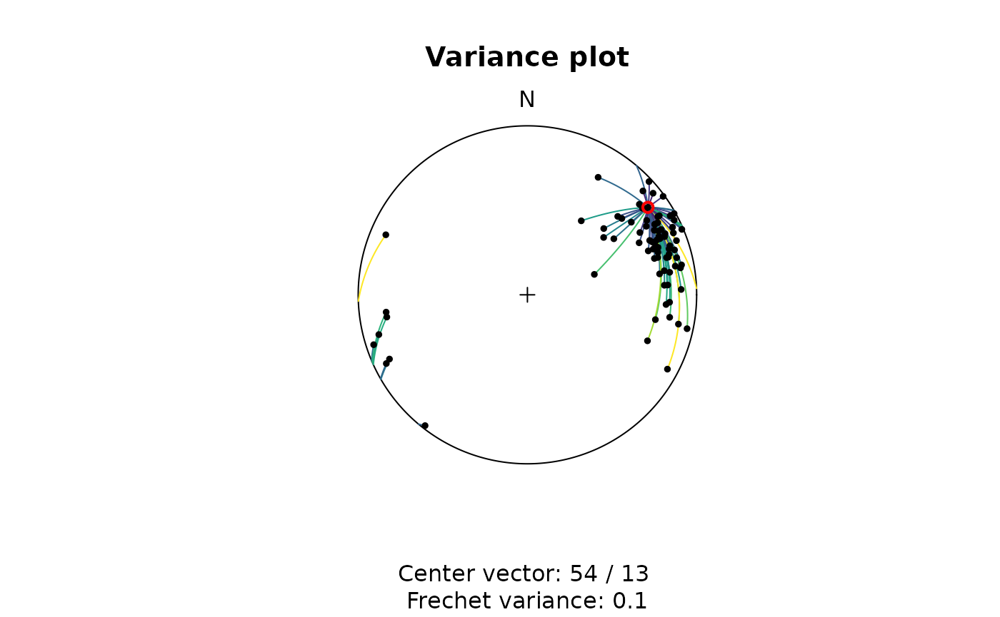

3. Statistics of orientation data
Tobias Stephan
2025-10-28
Source:vignettes/C_Statistics.Rmd
C_Statistics.RmdThis tutorial describes how to calculate basic statistics for spherical orientation data using the structr package. It covers the calculation of mean orientations, dispersion measures, hypothesis testing, orientation tensors, and clustering of orientation data.
Load the package:
To start, we import some example planes and lines, and convert them to spherical objects:
data(example_planes_df)
data(example_lines_df)
planes <- Plane(example_planes_df$dipdir, example_planes_df$dip)
lines <- Line(example_lines_df$trend, example_lines_df$plunge)Mean and dispersion
Arithmetic mean, geodesic mean, and projected mean
Arithmetic mean and variance
The arithmetic mean orientation of spherical data is calculated by summing up all orientation vectors and normalizing the resulting vector.
In geology, the statistical estimators are useful for
vectorial data ("Line" objects) such as
lineations (e.g. mineral lineations, stretching lineations) or plunge
directions of fold axes, but less for axial data ("Ray"
objects) such as paleomagnetic directions or orientations of fold axes,
where the direction is not relevant.
These estimators are good descriptors of the concentration of the data around the mean direction, assuming a unimodal, isotropic distributions such as the von Mises-Fisher distribution.
Define some weights for our lines based on the quality reported for the measurements:
example_lines_df$quality <- ifelse(is.na(example_lines_df$quality), 6, example_lines_df$quality) # replacing NA values with 6
line_weightings <- 6 / example_lines_df$qualityThe (weighted) arithmetic mean orientation of spherical data is:
lines_mean <- sph_mean(lines, w = line_weightings)… and the (weighted) arithmetic variance
lines_variance <- sph_var(lines, w = line_weightings)the (weighted) standard deviation (i.e. the 63% cone around the mean) and the 95% confidence cone around the mean:
lines_delta <- delta(lines, w = line_weightings)
lines_confangle <- sph_confidence_angle(lines, w = line_weightings)Taken together, this prints as
c(
"Variance" = lines_variance,
"63% cone" = lines_delta,
"Confidence angle" = lines_confangle
)
#> Variance 63% cone Confidence angle
#> 0.1938084 36.2745102 6.9017035Summary stats can also be retrieved through
summary(lines)
#> azimuth plunge variance 68% cone confidence cone
#> 68.5127690 20.4958671 0.2168518 38.4502642 4.7492331Plotting a summary of the stats on a equal-area projection:
stereoplot(guides = FALSE)
points(lines, col = "lightgrey", pch = 1, cex = .5)
points(lines_mean, col = "#B63679", pch = 19, cex = 1)
lines(lines_mean, ang = lines_confangle, col = "#E65164FF")
lines(lines_mean, ang = lines_delta, col = "#FB8861FF")
legend("topright", legend = c("Mean line", "95% confidence cone", "63% data cone"), col = c("#B63679", "#E65164FF", "#FB8861FF"), pch = c(19, NA, NA), lty = c(NA, 1, 1), cex = .75)
Geodesic mean and variance
Another measure of mean and dispersion is the Fréchet (geodesic
L2) mean and variance which is based on the
angles between all data vectors.
This can be visualized using the variance_plot(); here
showing the (geodesic) angle distances between all lines and the first
line in the same data set:
variance_plot(lines, y = lines[1, ])
The Fréchet mean is the vector that minimizes the sum of the squared angle distances to all data vectors. The Fréchet variance about this mean is the sum of the squared angle distances between all data vectors and the Fréchet mean.
To find the Fréchet mean vector, the algorithm iteratively searches for the vector by using a numerical optimization method to minimize the distances to all other vectors
# Mean
geodesic_mean(lines)
#> Line object (n = 1):
#> azimuth plunge
#> 69.64018 14.87713
# Variance
geodesic_var(lines)
#> [1] 0.06118261These estimators are good descriptors of the concentration of the data around the mean direction, when data follows a unimodal, anisotropic distributions such as the Kent or Bingham distributions.
Projected mean
The Eigenvector with the largest Eigenvalue represents a vector parallel to the highest concentration of a population. This vector can also be described as the projected mean. A shortcut function for this is:
projected_mean(example_lines)
#> Line object (n = 1):
#> azimuth plunge
#> 69.09796 14.82125These estimators are good descriptors of the concentration of the data around the mean direction, when data follows a unimodal, anisotropic distributions such as the Kent or Bingham distributions.
par(mfrow = c(1,2))
stereoplot(guides = FALSE)
points(example_lines, col = "grey", pch = 16, cex = .7)
points(sph_mean(example_lines), col = "#1D1147FF", pch = 16)
points(geodesic_mean(example_lines), col = "#B63679FF", pch = 16)
points(projected_mean(example_lines), col = "#FEC287FF", pch = 16)
title(main = 'Lines')
legend("bottomleft",
legend = c("Arithmetic mean", "Geodesic mean", "Projected mean"),
col = c("#1D1147FF", "#B63679FF", "#FEC287FF"),
pch = 16,
bg = 'white')
stereoplot(guides = FALSE)
points(example_planes, col = "grey", pch = 16, cex = .7)
points(sph_mean(example_planes), col = "#1D1147FF", pch = 16)
points(geodesic_mean(example_planes), col = "#B63679FF", pch = 16)
points(projected_mean(example_planes), col = "#FEC287FF", pch = 16)
title(main = 'Planes')Hypothesis testing
To test if a line represents the population mean of a given set of lineations, we need to calculate the confidence region of our population.
Let’s test the hypothesis that a horizontal lineation trending towards 70° is the mean for our lineations.
line_NULL <- Line(70, 0)The 95% confidence interval (from 10,000 bootstrap samples):
ce <- confidence_ellipse(lines, n = 10000, alpha = 0.05)To visualize the confidence region of our lines:
plot(lines, col = "grey")
stereo_confidence(ce, col = "#B63679FF")
points(line_NULL, col = "#000004", pch = 16)The p-value for our hypothesis line:
ce$pvalue.FUN(line_NULL)
#> [1] 0With (95% confidence) we rejected the Null Hypothesis that the given line represents the population mean as the p-value is smaller than 5%.
Orientation tensor
Eigenvectors
The orientation tensor (Scheidegger 1965) is a matrix comprising the mean direction cosines of the orientation vectors. In case of a Bingham distribution, the Eigenvectors of this tensor describe the orientation of the most dense, intermediate and least dense orientation, and thus, are used to determine the orientation of girdle-distributed vectors (e.g. folded planes).
Shape parameters
There are more shape parameters using different algorithms based on the orientation tensor:
or_shape_params(planes)
#> $stretch_ratios
#> Rxy Ryz Rxz
#> 1.478428 1.873104 2.769250
#>
#> $strain_ratios
#> e12 e13 e23
#> 0.3909795 1.0185765 0.6275970
#>
#> $Vollmer
#> P G R B C I D
#> 0.3416388 0.4120004 0.2463608 0.7536392 2.0371530 2.4750912 0.4790938
#>
#> $Flinn
#> $Flinn$k
#> [1] 0.5479625
#>
#> $Flinn$d
#> [1] 0.9955924
#>
#>
#> $Ramsay
#> intensity symmetry
#> 0.5467429 0.6229787
#>
#> $Woodcock
#> strength shape
#> 1.0185765 0.6229787
#>
#> $Watterson_intensity
#> [1] 2.351532
#>
#> $Lisle_intensity
#> [1] 1.147654
#>
#> $Nadai
#> goct eoct
#> 0.8391109 0.7266914
#>
#> $Lode
#> [1] 0.2323021
#>
#> $kind
#> [1] "SSL"
#>
#> $MAD
#> [1] 32.80303
#>
#> $US
#> [1] 229.5308
#>
#> $Jellinek
#> [1] 2.794622Cluster vectors
To find k clusters of orientational data, the
sph_cluster() function can be used:
# generate some random vectors:
set.seed(20250411)
x1 <- rvmf(100, mu = Line(90, 0), k = 20)
x2 <- rvmf(100, mu = Line(0, 0), k = 20)
x3 <- rvmf(100, mu = Line(0, 90), k = 20)
x123 <- rbind(x1, x2, x3)
# cluster the vectors:
cl <- sph_cluster(x123, k = 3)
# visualize the result:
plot(x123, col = assign_col_d(cl$cluster))
legend_d(assign_col_d(unique(cl$cluster)), title = "Cluster")
References
Bachmann, F., Hielscher, R., Jupp, P. E., Pantleon, W., Schaeben, H., & Wegert, E. (2010). Inferential statistics of electron backscatter diffraction data from within individual crystalline grains. Journal of Applied Crystallography, 43(6), 1338–1355. https://doi.org/10.1107/S002188981003027X
Davis, J. R., & Titus, S. J. (2017). Modern methods of analysis for three-dimensional orientational data. Journal of Structural Geology, 96, 65–89. https://doi.org/10.1016/j.jsg.2017.01.002